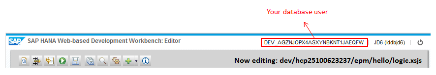
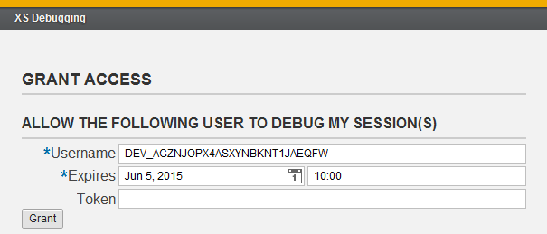
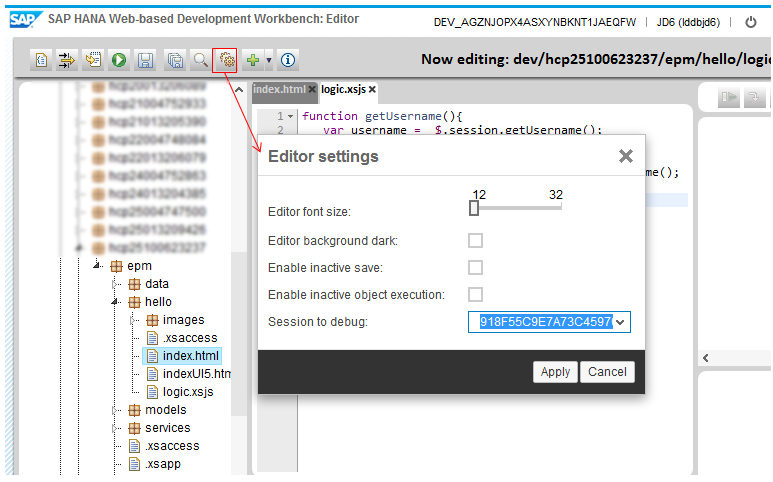

Debugging Server-Side JavaScript with SAP HANA Web-based Development Workbench
Context
Use this procedure to debug your HANA XS applications with SAP HANA Web-based Development
Workbench.
Note If your session in SAP HANA Web-based Development Workbench expires and
you are requested to log on, close the browser tab or window, and use the
Open in Web-based Development Workbench link in the
Cockpit to reopen it.
Procedure
Log onto the cockpit on the Trial landscape and choose HANA XS
Applications.
Note We recommend that you use the Google Chrome browser.
In the HANA XS Applications table, select the
application to display its details.
In the Application Details section, click
Open in Web-based Development Workbench.
Grant your database user permission to debug your current session with the HANA
XS application. This is done as follows:
Open your XS application that you want to debug.
Open the XS debugging application using the following URL:
https://<your HANA XS application
host>/sap/hana/xs/debugger/
You can get the HANA XS application root using the HANA XS
Applications section in the Cockpit (see the image below).
Enter your database user name and expiration date and time of the
permission.
Tip Get your database user name from the top right corner
of SAP HANA Web-based Development Workbench.

Choose Grant.

In the SAP HANA Web-based Development Workbench, choose the
Settings button, then choose the xsSessionId that you
want to debug.
Tip Use your browser’s developer tools to get the value of the
xsSessionId cookie of the required session.

Depending on whether you want to debug a .xsjs file directly, or a
more complex scenario (set a breakpoint in a .xsjs file and
run another file), do the following:
.xsjs file:
Set the breakpoints and then choose the Run on server
(F8) button.
Complex scenario:
Set the breakpoint in the .xsjs file you want
to debug.
Open a new tab in the browser and then open the other file on this tab by entering its
URL (https://<your HANA XS application
host>/<package>/<file>).
Note If you synchronously call the .xsjs file in
which you have set a breakpoint and then open the other file in the SAP
HANA Web-based Development Workbench and execute it by choosing the
Run on server (F8) button, you will block
your debugging session. You will then need to terminate the session by
closing the SAP HANA Web-based Development Workbench tab.
Note If you leave your debugging session idle for some time once you have
started debugging, your session will time out. An error in the WebSocket
connection to the backend will be reported and your WebSocket connection for
debugging will be closed. If this occurs, reopen the SAP HANA Web-based
Development Workbench and start another debugging session.
Perform the required activities in your HANA XS application, and observe the behavior of
the debugging session in Web-based Development
Workbench.